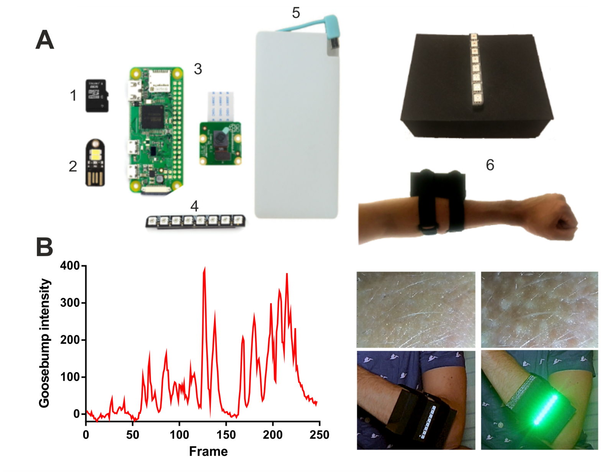
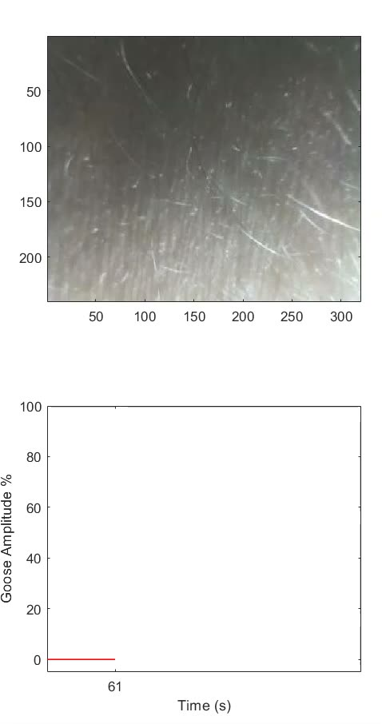
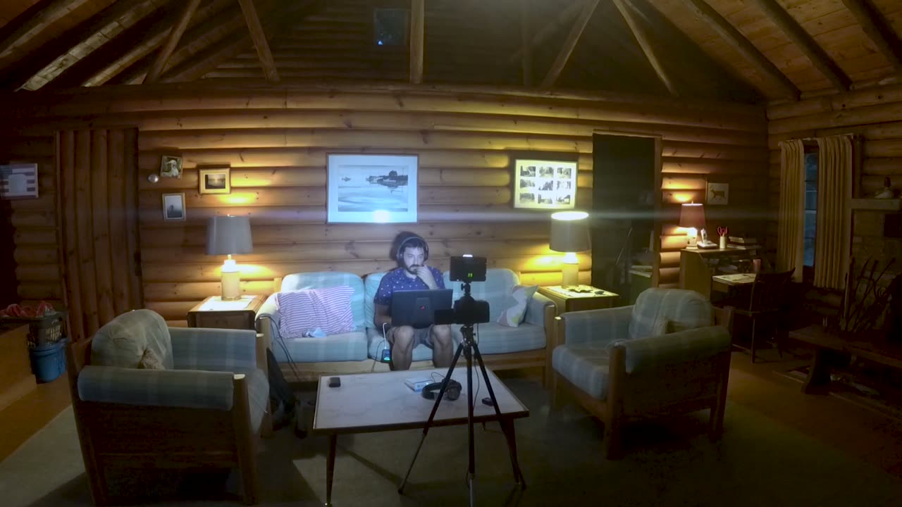
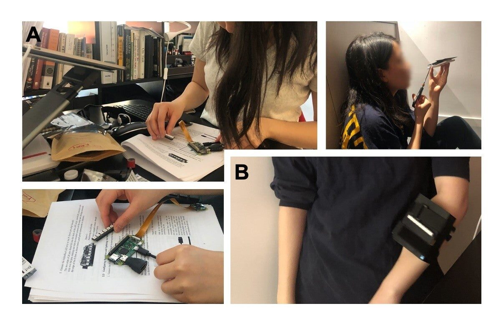
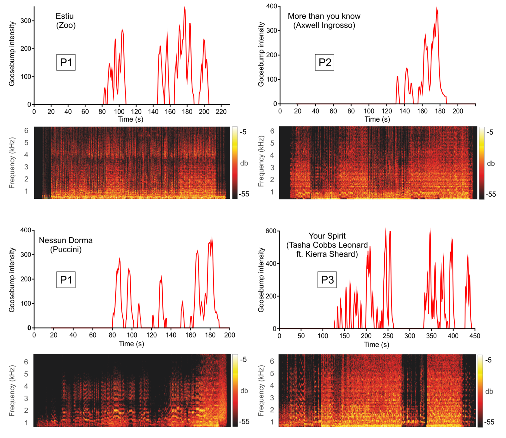
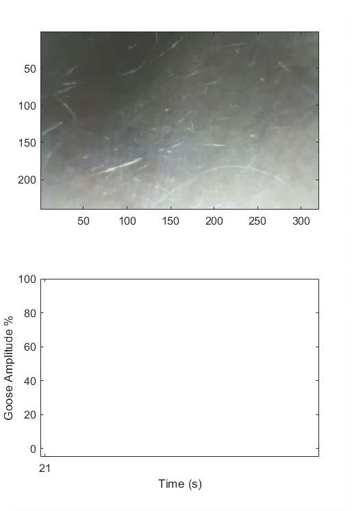

CHILLER: a Computer Human Interface for the Live Labeling of Emotional Responses
Abstract
The CHILLER (a Computer-Human Interface for the Live Labeling of Emotional Responses) is a prototype of an affordable and easy-to-use wearable sensor for the real-time detection and visualization of one of the most accurate biomarkers of musical emotional processing: the piloerection of the skin (i.e., the goosebumps) that accompany musical chills (also known as musical frissons or shivers down the spine). In controlled laboratory experiments, electrodermal activity (EDA) has been traditionally used to measure fluctuations of musical emotion. EDA is, however, ill-suited for real-world settings (e.g., live concerts) because of its sensitivity to movement, electronic noise and variations in the contact between the skin and the recording electrodes. The CHILLER, based on the Raspberry Pi architecture, overcomes these limitations by using a well-known algorithm capable of detecting goosebumps from a video recording of a patch of skin. The CHILLER has potential applications in both academia and industry and could be used as a tool to broaden participation in STEM, as it brings together concepts from experimental psychology, neuroscience, physiology and computer science in an inexpensive, do-it-yourself device well-suited for educational purposes.
Author Keywords
STEM education, Raspberry Pi, Goosebumps, Biofeedback, Wearable, Emotion
CCS Concepts
Human-Centered computing → Ubiquitous and mobile computing;
Hardware → Sensor devices and platforms;
Applied Computing → Interactive learning environments;
Introduction
The experience of emotion—the conscious awareness that something of psychological or biological importance is affecting us—influences our thoughts and behavior since the day we are born[1][2]. Importantly, emotions not only affect human behavior, but also induce physiological changes that can be objectively measured [3]. In this vein, there is one physiological index related to high peaks in emotional arousal that has received a great deal of attention: chills [4]. Aesthetic chills [5] are induced by various abstract rewarding stimuli [6] such as films [7], poetry [8] and especially, music [6][9][10]. Musical chills, also known as frissons, thrills or shivers down the spine, represent moments of music-induced emotional and physiological arousal [11][12][13]. When measured in controlled environments (e.g., in a laboratory setting), this type of physiological reaction has been related to peak moments of pleasure and/or the feeling of being “moved” [12][13]. Importantly, musical chills correlate with enhanced activity in brain regions within the reward network [14] [15] and are also related to the release of dopamine [16][17]. Of importance for this work, musical chills are usually accompanied by a visible skin physiological correlate: goosebumps (i.e., emotional piloerection, the visible erection of the hair on the skin; [18][19][20]).
Related Work
In recent years, there has been a growing interest in the assessment of the neural, physiological and cognitive mechanisms underlying naturalistic stimuli processing [21] both in the visual [22][23][24] and auditory domain [25][26][27], as evidenced by the increasing release of databases with naturalistic stimuli [28]. Likewise, naturalistic or “real world“ paradigms (testing cognitive, physiological and neural processes in real-life situations) are gaining increased popularity[29][30] [31][32]. However, even in the case of music—a naturalistic stimulus well-known to elicit reward-related responses [15]—the way we test participants in the laboratory usually fails to capture how we interact with music in our everyday lives. From a very young age, we sing along or clap, jump and dance to the rhythm of our favorite songs [33], and that is often accompanied by a great deal of pleasure, chills, and goosebumps [34]. In order to detect peak moments of musical emotion, previous research has mostly relied on three different approaches : behavioral self-reports (e.g., pressing a button when experiencing a peak moment of pleasure or a musical chill), electrodermal activity (EDA), and optical detection of piloerection. EDA is based the fact that an enhanced emotional reaction results in increased sympathetic activation: increased sweating provokes a reduction in the skin’s electrical resistance which in turn results in an increase of EDA signal [35]. While EDA is a well-known biomarker of musical chills and emotional piloerection ([13][36][19], it is ill-suited for measuring music-related emotional responses in real-word situations, as it is extremely susceptible to motion artifacts, electronic noise, and variations in the contact between the skin and the recording electrode [37]. Studies using physiological markers of music emotion with biofeedback based on EDA and heartbeat [38][39][40] or even EEG data [41][42] are limited by the nature of these signals and either have to collect data in constrained, not eco-valid conditions or, if measuring EDA in free-flowing contexts, need to apply complex and/or manual motion correction to the physiological signal [43][44]. As an alternative to EDA, Benedek and colleagues [18][19] developed an innovative tool to detect the piloerection of the skin by means of an optical recording device (a webcam) attached to a limb. Benedek and colleagues also developed a software toolbox to analyze the recorded skin video and transform it to a quantifiable, continuous, and objective measure of emotional piloerection (i.e., emotional goosebumps; the GooseCam; http://www.goosecam.de/). While the GooseCam is not affected by electronic artifacts (i.e., no electrodes), the recording device is large and fixed to a desktop/laptop computer, and the analysis usually occurs offline. Thus, none of the current methods for the quantification of musical chills or piloerection are suited for the unconstrained, large-scale measurement of human emotion in real-world environments (e.g., a concert, a music festival) as: (1) behavioral methods are subjective (self-ratings) and require constant self-monitoring; (2) EDA measures are heavily affected by motion and electronic artifacts; and (3) the devices developed for optical recording of goosebumps are not portable.
Creating the CHILLER
Here we aimed to develop a prototype for an affordable, easy-to-use, and easy-to-assemble wearable sensor for the real-time measurement of musical emotion in real-world settings: the CHILLER (a “Computer-Human Interface for the Live Labelling of Emotional Responses”). To do so we capitalized on Benedek’s GooseCam for piloerection detection [18][19] and on the flexible architecture of the Raspberry Pi series of single-board computers.
Hardware
Benedek’s GooseCam consists of (1) a webcam located at the top of (2) a large hollow aluminum box with a cut-out revealing a skin patch (30 x 50 mm), and (3) white LEDs for skin illumination. The system is connected to a (4) desktop computer via USB cables for (5) power and (6) data recording. We have evolved Benedek’s system into a portable all-in-one device by providing improvements to these six features, and have expanded the GooseCam’s original capabilities by adding a biofeedback option. To this end, we have added a strip of LEDs which can be controlled in real time and signal, by lighting up, that the user is experiencing a peak moment of emotion. The core hardware of the CHILLER is the Raspberry Pi Zero WH (Fig. 1A), the cheapest, slimmest, most pared-down model of the Raspberry family of minicomputers (66.0 x 30.5 x 5.0 mm, 9.3 g). The Pi Zero WH has built Wi-Fi capabilities, CPU performance similar to a 300 MHz Pentium II, and the graphical computing capabilities of a first-generation Xbox. To replicate Benedek’s goosebumps detector, we used the 8-megapixel Raspberry Pi Camera Board as the optical device , one microSD card to act as a hard drive (32GB,), an ultra-slim 2500mAh power bank to power the device (5v 1A), a Mini-LED USB stick for illuminating the skin being recorded with an micro-USB adapter, a GPIO header (included in the Pi Zero WH model; note that there is a model without the header, the Pi Zero W), a LED strip for biofeedback (Pimoroni’s Blinkt), a 3D-printed case (100 x 75 x 52 mm) with a rectangular cut-out to allow the camera to record the skin, and two Velcro straps to attach the wearable to the arm. Since the CHILLER is designed as a do-it-yourself device that laypeople can assembly with ease, we opted to use Foam Mounting Pads (e.g. accessible in any hardware store) to stick the hardware to the case (see our assembly guide in the CHILLER GitHub repository).
In Table 1, we provide a bill-of-materials for the CHILLER. Cost estimates were rounded to the nearest half dollar amount and do not include tax or shipping expenses. When the quantity of an item is 1, its estimated cost represents the listed cost of 1 such item; when the quantity of an item is greater than 1, the estimate given is for the total cost of the required quantity of items. As purchasing options in the exact quantities required were not readily available for the Mini-LED USB stick, 2.54 cm x 45 cm Velcro Straps, and 2.54 x 2.54 Foam Mounting Pads at the time of this writing, the cost estimates for these were obtained as the fractional cost of higher-quantity purchasing options. The cost estimate for the Blinkt! LED Strip represents a currency conversion to USD from a listed price of £6 ($8.22 at the time of this writing), rounded to the nearest half dollar. The cost of the 3D-Printed CHILLER Case & Lid is estimated as the fractional cost of a 335-meter-long spool of 3D-Printer Filament ($23), less than 20 meters of which is required to print a single case & lid when printed by a low-cost (<$200) tabletop 3D Printer kit (we used a Kingroom DIY Aluminum Printer). According to this estimate, the CHILLER costs around $80. A step-by-step guide describing how to build the CHILLER, including the required Raspbian configuration (Raspberry Pi’s O.S), can be found in our dedicated CHILLER GitHub (https://github.com/ripolleslab/chiller).
Table 1. CHILLER bill-of-materials
Description | Quantity | Estimated Cost |
|---|---|---|
Raspberry Pi Zero WH | 1 | $14 |
V2-8 Megapixel Pi Zero Camera Board | 1 | $24.50 |
150mm Pi Zero Camera Cable | 1 | $5 |
32GB Micro-SD Card with SD Adapter | 1 | $5 |
Ultra-Slim Power Bank | 1 | $12 |
USB-Stick Mini-LED Light | 1 | $1.50 |
USB-to-Micro-USB Adapter | 1 | $4 |
Blinkt! LED Strip | 1 | $8 |
2.54 x 2.54 cm Foam Mounting Pads | 8 | $1 |
2.54 x 45 cm Velcro Straps | 2 | $1.50 |
3D-Printed CHILLER Case & Lid | 1 | $1.50 |
Total Estimated Cost ($): | $78 | |


Fig 1. The CHILLER. A. Main hardware components: microSD (1; serves as hard drive), energy efficient LED (2; used to illuminate the inside of the case and the patch of skin to be recorded), Pi Zero W (mini-computer) and Camera Board (3), programmable LED strip for biofeedback (4) and ultra-slim power bank (power source; 5). All these components are placed inside a 3D printed case (6) with a cut-out at the bottom that allows a patch of skin to be recorded when attached to the arm (right top and bottom). See Table 1 and the CHILLER assembly guide in its GitHub repository for more details. B. Left. Music-related goosebump intensity (percentage of change from skin baseline-period, in red) measured in one participant who was dancing while listening to Rituales de santería, by the band Zoo. Right. Example of a moment of skin at rest (left column; baseline period) and of a peak moment of pleasure that was accompanied by goosebumps (right column). The LED strip provides biofeedback by lighting up in green when goosebumps are detected.
Software
Benedek and colleagues developed a MATLAB algorithm that computes a an objective measure of piloerection by converting the recorded skin video signal into the frequency domain using a two-dimensional Fourier transform (see [18][19]). In brief, the raw image is converted into gray-scale, and a two-dimensional discrete Fourier transform (DFT) is applied to this pre-processed image. To discard irrelevant directional information of the frequency components, the DFT result is converted to a one-dimensional spectrum of spatial frequency by means of angular averaging. The maximum spectral power in the 0.23 to 0.75 mm-1 spatial frequency band is used to consider only correlates of piloerection intensity. We have reduced Benedek’s algorithm to its minimal steps and adapted it for rapid online analysis with biofeedback in the miniaturized environment of the Raspberry Pi:
In order to minimize the height of the CHILLER case, we calculate goosebumps from the smallest patch of skin possible that the Raspberry Pi Camera can record without losing focus. The larger the patch of skin recorded, the greater distance needed between the camera and the skin, which ultimately increases the device size. We were able to reduce the height of the CHILLER case to 52 mm.

▶Video 1. Algorithm robustness to movement. Short example of a participant (P1) moving the arm while connected to the CHILLER. This is a 10 second snippet from a 10 minute session in which P1 constantly moved the arm. No false positives were detected.
2. We have implemented a new protocol to provide online biofeedback that capitalizes on the CHILLER’s LED strip. We first compute a baseline as the average of the maximum spectral power from 10 skin images while the participant is at rest. During this step, the LED strip turns red to signal that the baseline is being recorded. After this the LED strip is turned off and the intensity of the goosebumps is computed continuously as the percentage of change from the computed baseline (i.e., the maximum spectral power for each frame is divided by the baseline and multiplied by 100). We tested the robustness of the algorithm by: i) asking one participant (P1) to move the arm in a 10 minute recording session in which no stimulation was applied (see Video 1); and ii) assessing whether piloerection matched the output of the algorithm by visualizing the video recordings from the same individual (P1) while listening to a song and watching a film of their choosing (see Figure 1B, and Videos 2 and 3). Results indicate that during the session in which no musical stimuli was applied, movement did not induce false positives representing a percentage of change from baseline above 20%. In addition, during the stimulation session, the output of the algorithm matched the video feed of the skin, that is, goosebumps could be seen in the recording only when the algorithm predicted them (see Figure 1B). In order to have a more robust signal, we chose 30% of change from baseline as the threshold to detect goosebumps. Note that no motion related false positives were detected using this threshold in two other participants (P2 and P3) who were also allowed to move (see Figure 3 and the Preliminary Results section). Thus, the final output of the CHILLER is a flat signal that only rises when it detects a change from baseline greater than 30% (see Figure 1B, left). When such a change occurs, the LED turns green, with a luminance that matches the intensity of the goosebumps detected (i.e., goosebumps inducing an 80% change from baseline will induce a brighter light in the LED than goosebumps inducing a 50% of change from rest; see Figure 1B, right).
3. We have created a compact and easy-to-use MATLAB script that can be run on a standard laptop or desktop computer in concert with the CHILLER. This code (1) connects the laptop to a CHILLER via WiFi, (2) captures video of the skin at approximately 2 Hz (it takes one frame at a 320x240 resolution around 500ms to be fully processed in real time), (3) transforms in real time the optical piloerection data into a quantified measure of chill intensity that can be stored for further reanalysis and (4) provides real-time biofeedback about music-related emotion. Note that goosebumps are a slow physiological reaction and that 2 Hz is an adequate sampling rate to record them.
Video 2. Example of a CHILLER music session. One participant is allowed to move freely while listening to Rituales de Santería (from Zoo). The DJ (not connected to a CHILLER) is able to see the emotional physiological response in real time both by looking at the result of the piloerection detection algorithm in his laptop and also using the biofeedback provided by the LED strip of the CHILLER.

▶Video 3. Example of a CHILLER film session. One participant is allowed to move his arms freely while watching the ending of Avengers Endgame. Note how the LED strip increases its luminance with the intensity of the goosebumps.
All software for the CHILLER (including the 3D design of the case) resides in our dedicated CHILLER GitHub (https://github.com/ripolleslab/chiller).
Preliminary Results
First, in order to showcase how assembling the CHILLER requires no previous knowledge of the hardware or software involved, we asked a Master’s student (Psychology program, New York University) to build our wearable using our step-by-step guide and materials. The student, who had no relationship to the project or previous knowledge of the device and its parts, was able to build and use a CHILLER in 4-5 hours (see Figure 2).


Figure 2. Unsupervised assembly of the CHILLER. A Master’s student with no relationship to the project constructed a CHILLER using our step-by-step guide. A. Top, bottom left. The student assembles the mini-computer, energy efficient LED, and programmable LED strip. Top right. The student attaches the board to the ultra-slim power bank to be inserted into the 3D printed case. B. The finished, wearable product.
In addition, data was collected from three participants (P1: male, 34 years of age, white Hispanic; P2: female, 19 years old, white; P3, female, 20 years old, African American) who reported experiencing emotional goosebumps frequently when listening to music. We asked the participants to provide several songs which usually made them experience goosebumps. For P1, recording started on the left arm for the first song and was alternated to the right arm for the subsequent musical piece. P2 and P3, were tested using the CHILLER on their non-dominant arm (left in both cases). Participants were given wireless headphones and freedom to move and dance while listening to their music (all participants moved during the sessions). P1 was asked not to move for one of the musical pieces (Nessun Dorma) to assess that goosebumps can also be elicited and detected with the participant at rest and are not merely a sub-product of enhanced physical activity. All participants read and signed a written informed consent . P1 participated as a volunteer, while P2 and P3 were paid for their participation in the experiment. All protocols were approved by the local institutional review board (New York University’s Committee on Activities Involving Human Subjects). After visually inspecting the videos, results show that all goosebumps were reliably detected by the CHILLER in all participants (see Figure 2 and Video 4). More video recordings of P1 can be found in the CHILLER GitHub repository (https://github.com/ripolleslab/chiller).


Fig 2. Results. Output of the CHILLER in three different participants (P1, P2 and P3). Results are expressed as the percentage of change in goosebumps intensity from a baseline period of rest. On the bottom of each goosebumps plot, the broadband spectrograms of the musical stimuli are plotted. The spectrograms were obtained using a fast Fourier transform, a Hamming window and a limit range of [-1 -59] dB.

▶Video 4. Session recording with the real-time output of the CHILLER. Responses were collected from P1 while he was listening to Estiu from the band Zoo.
Discussion and Impact
Here we present a prototype for a wearable, the CHILLER, that has the potential to reliably detect, in real-time, music-related goosebumps without being affected by movement. As opposed to previously developed physiological recording and biofeedback devices based on EDA, hear rate , a combination of both [38][39][40], and even EEG signals [41][42], the CHILLER is perfectly suited to investigate music-evoked emotion in real-world settings. While we acknowledge that more testing is needed (we only assessed responses from 3 participants) and that the CHILLER software and hardware needs refinement, we believe that our device could impact different aspects of both academia and the music industry as our effort is cross-disciplinary and aims to: (1) contribute to the advancement of several disciplines, including computer science, music technology, and human behavior and cognition; and (2) provide significant contributions in open-source hardware and software, which (after more development and testing) could be of value to communities of music performers and promoters, scientists, and educators. In the academic domain, the proposed wearable could help researchers to assess participants’ music-related emotional status outside of the rigidity of a laboratory environment. For example, the relationship between emotion and music-learning could be studied in the classroom, where children, adolescents, and adults actually learn [45][29] and perform better [46] in groups, as opposed to individuals isolated in behavioral testing rooms. In the clinical domain, music-based therapies and interventions for the recovery from stroke and other ailments are becoming more and more prevalent [47][48][49][50]. In this context, a more robust and properly tested version of the CHILLER could be used to assess the effectiveness of these clinical protocols by tracking the triggered emotional responses while the patients engage freely in the musical interventions. We also believe that a more refined version of the CHILLER could have potential applications in the music industry, as it adds an extra layer of quantifiable information that can enhance the way we experience music. In this vein, and taking into account that humans are eminently social animals, the CHILLER’s biofeedback feature could allow us—while dancing to the tunes of our favorite band in a live concert—to express our emotions to the rest of the audience and to the performers without losing a single beat (see Video 2).
Importantly, we also envision the CHILLER as a potential tool for broadening participation in STEM, especially at the high school level. Our wearable sensor is both an affordable device ($80) and also an inherently interdisciplinary learning kit that integrates concepts from computer science and technology, neuroscience, physiology and and experimental psychology. For example, an interdisciplinary curriculum could be developed to introduce high school students to broad aspects of STEM, combining hands-on training in technology and computer science (e.g., how to assemble and control the CHILLER) with theoretical and practical concepts from the cognitive neurosciences (e.g., what is the neuronal and physiological mechanism governing emotional goosebumps?) and experimental design (e.g. how do we use the device to create an experiment testing musical emotion?). In addition, using a Raspberry Pi Zero WH as the basis for the CHILLER opens up a new world of possibilities for students to expand the CHILLER design in new directions. For example, there are motion detection, skin conductance, and heart rate sensors (among many others), as well as embedded microphones, that can be easily connected to the Pi Zero and used to apply the CHILLER in novel ways (e.g., how is heart rate related to musical goosebumps?). However, even if our assembly test was successful with a Master’s student (see Figure 2), we acknowledge that more research is needed (especially targeting high school students) to assess the potential of the CHILLER as an educational tool.
Conclusions
The CHILLER is an open-source prototype wearable sensor that tracks one of the most accurate physiological markers of musical emotions: goosebumps. Future work is needed to refine and further test the device. In particular, we will focus on transitioning the CHILLER to a fully open-source platform (i.e. from MATLAB to Python or GNU Octave) that quantifies piloerection locally, and on improving the ergonomics of the 3D printed case. Most importantly, even though the algorithm should be robust to differences in skin color (the image of the skin is transformed into grey-scale before applying a DFT) and our preliminary data indicates that the algorithm is reliable in people of different races and ethnicities (we have tested with Black, White and Hispanic individuals, see the preliminary results section), future research needs validate our wearable in a large and diverse sample of human participants.
Acknowledgments
This work was partially funded by the NYC Media Lab and the American Society of Composers, Authors and Publishers (ASCAP). We thank them for their support of for their contributions to this project. We thank Pablo Semper for directing, editing and producing the videos showcasing the use of the CHILLER (Videos 2 and 3). We also thank Emma Ning for her participation in the unsupervised assembly of our wearable device (Figure 2).
Citations
- ↩LeDoux, J. (2012). Rethinking the emotional brain. Neuron, 73(4), 653–676.
- ↩LeDoux, J. E., & Brown, R. (2017). A higher-order theory of emotional consciousness. Proceedings of the National Academy of Sciences, 114(10), E2016–E2025.
- ↩Boucsein, W. (2012). Electrodermal activity. Springer Science &Business Media.
- ↩Panksepp, J. (1995). The emotional sources of" chills" induced by music. Music Perception, 13(2), 171–207.
- ↩McCrae, R. R. (2007). Aesthetic chills as a universal marker of openness to experience. Motivation and Emotion, 31(1), 5–11.
- ↩Goldstein, A. (1980). Thrills in response to music and other stimuli. Physiological Psychology, 8(1), 126–129.
- ↩Wassiliwizky, E., Wagner, V., Jacobsen, T., & Menninghaus, W. (2015). Art-elicited chills indicate states of being moved. Psychology of Aesthetics, Creativity, and the Arts, 9(4), 405.
- ↩Wassiliwizky, E., Koelsch, S., Wagner, V., Jacobsen, T., & Menninghaus, W. (2017). The emotional power of poetry: Neural circuitry, psychophysiology and compositional principles. Social Cognitive and Affective Neuroscience, 12(8), 1229–1240.
- ↩Nusbaum, E. C., & Silvia, P. J. (2011). Shivers and timbres: Personality and the experience of chills from music. Social Psychological and Personality Science, 2(2), 199–204.
- ↩Laeng, B., Eidet, L. M., Sulutvedt, U., & Panksepp, J. (2016). Music chills: The eye pupil as a mirror to music’s soul. Consciousness and Cognition, 44, 161–178.
- ↩Wassiliwizky, E., Jacobsen, T., Heinrich, J., Schneiderbauer, M., & Menninghaus, W. (2017). Tears falling on goosebumps: Co-occurrence of emotional lacrimation and emotional piloerection indicates a psychophysiological climax in emotional arousal. Frontiers in Psychology, 8, 41.
- ↩Wassiliwizky, E., Wagner, V., Jacobsen, T., & Menninghaus, W. (2015). Art-elicited chills indicate states of being moved. Psychology of Aesthetics, Creativity, and the Arts, 9(4), 405.
- ↩Salimpoor, V. N., Benovoy, M., Longo, G., Cooperstock, J. R., & Zatorre, R. J. (2009). The rewarding aspects of music listening are related to degree of emotional arousal. PloS One, 4(10), e7487.
- ↩Blood, A. J., & Zatorre, R. J. (2001). Intensely pleasurable responses to music correlate with activity in brain regions implicated in reward and emotion. Proceedings of the National Academy of Sciences, 98(20), 11818–11823.
- ↩Mas-Herrero, E., Maini, L., Sescousse, G., & Zatorre, R. J. (2021). Common and distinct neural correlates of music and food-induced pleasure: A coordinate-based meta-analysis of neuroimaging studies. Neuroscience & Biobehavioral Reviews, 123, 61–71. https://doi.org/10.1016/j.neubiorev.2020.12.008
- ↩Ferreri, L., Mas-Herrero, E., Zatorre, R. J., Ripollés, P., Gomez-Andres, A., Alicart, H., … others. (2019). Dopamine modulates the reward experiences elicited by music. Proceedings of the National Academy of Sciences, 116(9), 3793–3798.
- ↩Salimpoor, V. N., Benovoy, M., Larcher, K., Dagher, A., & Zatorre, R. J. (2011). Anatomically distinct dopamine release during anticipation and experience of peak emotion to music. Nature Neuroscience, 14(2), 257–262. https://doi.org/10.1038/nn.2726
- ↩Benedek, M., Wilfling, B., Lukas-Wolfbauer, R., Katzur, B. H., & Kaernbach, C. (2010). Objective and continuous measurement of piloerection. Psychophysiology, 47(5), 989–993.
- ↩Benedek, M., & Kaernbach, C. (2011). Physiological correlates and emotional specificity of human piloerection. Biological Psychology, 86(3), 320–329.
- ↩Uchida, M., Akaho, R., Ogawa, K., & Tsumura, N. (2018). Image-based non-contact monitoring of skin texture changed by piloerection for emotion estimation. In Optical Diagnostics and Sensing XVIII: Toward Point-of-Care Diagnostics (Vol. 10501, p. 105010G).
- ↩Sonkusare, S., Breakspear, M., & Guo, C. (2019). Naturalistic stimuli in neuroscience: critically acclaimed. Trends in Cognitive Sciences, 23(8), 699–714.
- ↩Hasson, U., Nir, Y., Levy, I., Fuhrmann, G., & Malach, R. (2004). Intersubject synchronization of cortical activity during natural vision. Science, 303(5664), 1634–1640.
- ↩Bartels, A., & Zeki, S. (2004). Functional brain mapping during free viewing of natural scenes. Human Brain Mapping, 21(2), 75–85.
- ↩Kauttonen, J., Hlushchuk, Y., Jääskeläinen, I. P., & Tikka, P. (2018). Brain mechanisms underlying cue-based memorizing during free viewing of movie Memento. NeuroImage, 172, 313–325.
- ↩Theunissen, F. E., & Elie, J. E. (2014). Neural processing of natural sounds. Nature Reviews Neuroscience, 15(6), 355–366.
- ↩Puschmann, S., Regev, M., Baillet, S., & Zatorre, R. J. (2021). MEG Intersubject Phase Locking of Stimulus-Driven Activity during Naturalistic Speech Listening Correlates with Musical Training. Journal of Neuroscience, 41(12), 2713–2722.
- ↩Di Liberto, G. M., Pelofi, C., Shamma, S., & de Cheveigné, A. (2020). Musical expertise enhances the cortical tracking of the acoustic envelope during naturalistic music listening. Acoustical Science and Technology, 41(1), 361–364.
- ↩DuPre, E., Hanke, M., & Poline, J.-B. (2020). Nature abhors a paywall: How open science can realize the potential of naturalistic stimuli. Neuroimage, 216, 116330.
- ↩Bevilacqua, D., Davidesco, I., Wan, L., Chaloner, K., Rowland, J., Ding, M., … Dikker, S. (2019). Brain-to-brain synchrony and learning outcomes vary by student–teacher dynamics: Evidence from a real-world classroom electroencephalography study. Journal of Cognitive Neuroscience, 31(3), 401–411.
- ↩Maguire, E. A. (2012). Studying the freely-behaving brain with fMRI. Neuroimage, 62(2), 1170–1176.
- ↩Shamay-Tsoory, S. G., & Mendelsohn, A. (2019). Real-life neuroscience: an ecological approach to brain and behavior research. Perspectives on Psychological Science, 14(5), 841–859.
- ↩Nastase, S. A., Goldstein, A., & Hasson, U. (2020). Keep it real: rethinking the primacy of experimental control in cognitive neuroscience. NeuroImage, 222, 117254.
- ↩Fujii, S., Watanabe, H., Oohashi, H., Hirashima, M., Nozaki, D., & Taga, G. (2014). Precursors of dancing and singing to music in three-to four-months-old infants. PloS One, 9(5), e97680.
- ↩Grewe, O., Nagel, F., Kopiez, R., & Altenmüller, E. (2007). Listening to music as a re-creative process: Physiological, psychological, and psychoacoustical correlates of chills and strong emotions. Music Perception, 24(3), 297–314.
- ↩Dawson, M., Schell, A., & Filion, D. (2000). The electrodermal system. In Handbook of Psychophysiology. https://doi.org/10.1017/CBO9780511546396.007
- ↩Mas-Herrero, E., Zatorre, R. J., Rodriguez-Fornells, A., & Marco-Pallarés, J. (2014). Dissociation between musical and monetary reward responses in specific musical anhedonia. Current Biology, 24(6), 699–704.
- ↩Taylor, S., Jaques, N., Chen, W., Fedor, S., Sano, A., & Picard, R. (2015). Automatic identification of artifacts in electrodermal activity data. In 2015 37th Annual International Conference of the IEEE Engineering in Medicine and Biology Society (EMBC) (pp. 1934–1937).
- ↩Yu, B., Funk, M., Hu, J., & Feijs, L. (2018). Unwind: a musical biofeedback for relaxation assistance. Behaviour &Information Technology, 37(8), 800–814.
- ↩Cano, S., Garcı́a, L., Collazos, C. A., & Albiol, S. (2019). Towards the design of a system to measure emotions using physiological signals as Biofeedback: case study in higher education students. In Proceedings of the 5th Workshop on ICTs for improving Patients Rehabilitation Research Techniques (pp. 122–130).
- ↩Ayata, D., Yaslan, Y., & Kamasak, M. E. (2018). Emotion based music recommendation system using wearable physiological sensors. IEEE Transactions on Consumer Electronics, 64(2), 196–203.
- ↩Deuel, T. A., Pampin, J., Sundstrom, J., & Darvas, F. (2017). The Encephalophone: A novel musical biofeedback device using conscious control of electroencephalogram (EEG). Frontiers in Human Neuroscience, 11, 213.
- ↩Pan, F., Zhang, L., Ou, Y., & Zhang, X. (2019). The audio-visual integration effect on music emotion: Behavioral and physiological evidence. PloS One, 14(5), e0217040.
- ↩Weixuan Chen, Jaques, N., Taylor, S., Sano, A., Fedor, S., & Picard, R. W. (2015). Wavelet-based motion artifact removal for electrodermal activity. In 2015 37th Annual International Conference of the IEEE Engineering in Medicine and Biology Society (EMBC). IEEE. https://doi.org/10.1109/embc.2015.7319814
- ↩Posada-Quintero, H. F., & Chon, K. H. (2020). Innovations in Electrodermal Activity Data Collection and Signal Processing: A Systematic Review. Sensors, 20(2), 479. https://doi.org/10.3390/s20020479
- ↩Dikker, S., Wan, L., Davidesco, I., Kaggen, L., Oostrik, M., McClintock, J., … others. (2017). Brain-to-brain synchrony tracks real-world dynamic group interactions in the classroom. Current Biology, 27(9), 1375–1380.
- ↩Reinero, D. A., Dikker, S., & Van Bavel, J. J. (2020). Inter-brain synchrony in teams predicts collective performance. Social Cognitive and Affective Neuroscience, 16(1–2), 43–57. https://doi.org/10.1093/scan/nsaa135
- ↩Sihvonen, A. J., Särkämö, T., Leo, V., Tervaniemi, M., Altenmüller, E., & Soinila, S. (2017). Music-based interventions in neurological rehabilitation. The Lancet Neurology, 16(8), 648–660.
- ↩Ripollés, P., Rojo, N., Grau-Sánchez, J., Amengual, J., Càmara, E., Marco-Pallarés, J., … others. (2016). Music supported therapy promotes motor plasticity in individuals with chronic stroke. Brain Imaging and Behavior, 10(4), 1289–1307.
- ↩Särkämö, T., Tervaniemi, M., Laitinen, S., Forsblom, A., Soinila, S., Mikkonen, M., … others. (2008). Music listening enhances cognitive recovery and mood after middle cerebral artery stroke. Brain, 131(3), 866–876.
- ↩Särkämö, T., Ripollés, P., Vepsäläinen, H., Autti, T., Silvennoinen, H. M., Salli, E., … Rodrı́guez-Fornells, A. (2014). Structural changes induced by daily music listening in the recovering brain after middle cerebral artery stroke: a voxel-based morphometry study. Frontiers in Human Neuroscience, 8, 245.